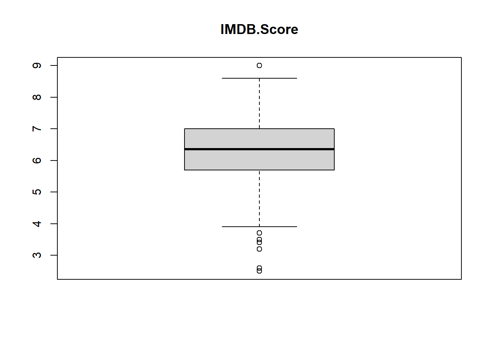
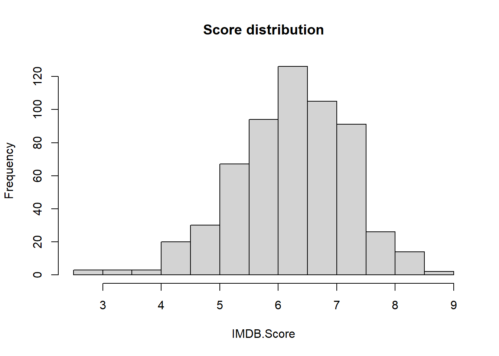
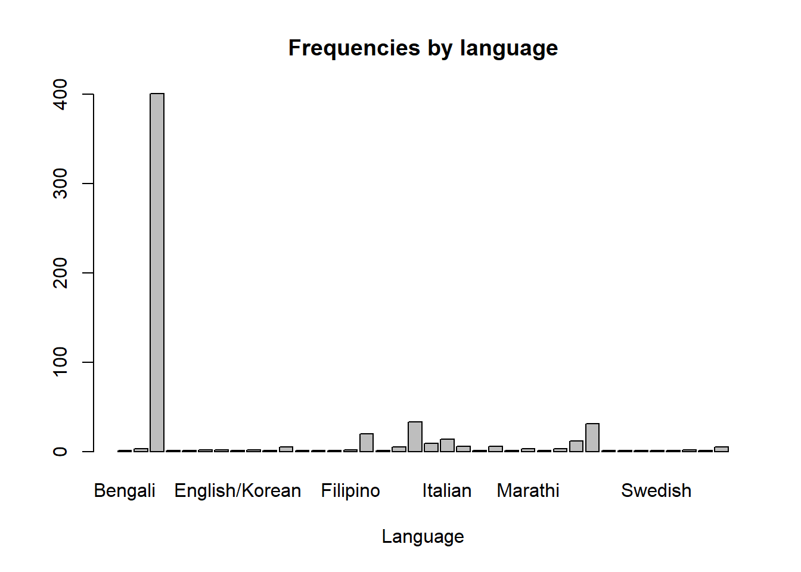

##Check working directory
getwd()[1] "C:/Users/antje/Documents/studium PUK/Master-Publizistik/STUDIENASSISTENZ/Test Tutorial"This tutorial introduces you to a few basic data handling procedures in R. You will learn how to - read a data frame from an Excel file into R, - inspect the data set - do some exploratory analyses including basic plotting - filter and sort data.
First we check with “getwd()” under which path our working directory is. This is the folder in which R puts all documents created in this project, and from which it also reads documents. All scripts and datasets we want to work with should be placed in this folder. When we have created a project, this is automatically created as a working directory.
##Check working directory
getwd()[1] "C:/Users/antje/Documents/studium PUK/Master-Publizistik/STUDIENASSISTENZ/Test Tutorial"If we want to set a different folder as the working directory, we can best do this manually under: Session -> Set Working Directory -> Choose Directory.
Or we use the “setwd()” function and specify the exact path to the desired folder in the brackets.
In the following we need two R packages that are not already included in the basic version. An R package is a collection of R features, data, and documentation developed specifically for a specific purpose or application. R packages are typically built and deployed by the R community. The R packages we need can be downloaded and installed via CRAN (Comprehensive R Archive Network). We can check whether we have already installed the necessary packages and install missing packages with the following code:
##Pakete installieren
if (!require(tidyverse)) {install.packages("tidyverse")}Lade nötiges Paket: tidyverseWarning: Paket 'ggplot2' wurde unter R Version 4.4.3 erstellt── Attaching core tidyverse packages ──────────────────────── tidyverse 2.0.0 ──
✔ dplyr 1.1.4 ✔ readr 2.1.5
✔ forcats 1.0.0 ✔ stringr 1.5.1
✔ ggplot2 4.0.1 ✔ tibble 3.2.1
✔ lubridate 1.9.3 ✔ tidyr 1.3.1
✔ purrr 1.0.2 ── Conflicts ────────────────────────────────────────── tidyverse_conflicts() ──
✖ dplyr::filter() masks stats::filter()
✖ dplyr::lag() masks stats::lag()
ℹ Use the conflicted package (<http://conflicted.r-lib.org/>) to force all conflicts to become errorsif (!require(rmarkdown)) {install.packages("rmarkdown")}Lade nötiges Paket: rmarkdownWarning: Paket 'rmarkdown' wurde unter R Version 4.4.3 erstelltAlternatively, we can click “Packages -> install” in the bottom right area. Then, a window opens in which we can type the name of the package. Then click “Install” and the package will be installed. When you click “Update”, R Studio will check if there are any updates for installed packages and ask you if it should install them. You only have to install packages once and update them occasionally.
Every time we want to use a package in a session for a project, we have to load it first:
##load packages
library(tidyverse)
library(rmarkdown)The installed packages are displayed under the tab “Packages” in the bottom right area. Loaded packages are shown with a tick.
With the following function we can read a data set in the form of a csv file (comma separated values). We assign this directly to an object named “netflix_films”.
Important!: The data set must be saved in our working directory, otherwise it won’t work.
netflix_films <- read.csv("NetflixOriginals.csv")This data set consists of all Netflix original films released as of June 1, 2021. In addition, it also includes all Netflix documentaries and specials. You can find more information about the data set here: https://www.kaggle.com/datasets/luiscorter/netflix-original-films-imdb-scores
If we simply enter the name of the data set, it will be displayed in full in the console. This is rather impractical, especially for large data sets, such as the sample data set.
netflix_films
#displays the entire record; impractical for large data setsWith the “View()” command, we open the data set in a separate table window, in which the data is displayed in tabular form. This is useful for getting a quick overview of the data.
View(netflix_films) #displays data in tabular formWith the command “class()” we can find out to which class (= data type) the object “netflix_films” belongs. In our case it is “data.frame”. A data frame is a specific format for storing data. It always contains the cases (=observations) in the rows and the variables (=observation values) in the columns.
class(netflix_films) #indicates the class of the object: data.frame[1] "data.frame"With the glimpse() command we get an overview of the columns (=variables) in the data set with useful information such as column names, data type, number of missing values etc. We see that we have four variables of type “Character” (chr), i.e. they are saved as a character string: Title, Genre, Premiere, Language. Two variables are numeric, where “Runtime” is stored as an integer (int=integer), whereas the variable “IMDB.Score” is stored as a decimal (dbl=double).
glimpse(netflix_films) # gives an overview of the columns in our data setRows: 584
Columns: 6
$ Title <chr> "Enter the Anime", "Dark Forces", "The App", "The Open Hous…
$ Genre <chr> "Documentary", "Thriller", "Science fiction/Drama", "Horror…
$ Premiere <chr> "August 5, 2019", "August 21, 2020", "December 26, 2019", "…
$ Runtime <int> 58, 81, 79, 94, 90, 147, 112, 149, 73, 139, 58, 112, 97, 10…
$ IMDB.Score <dbl> 2.5, 2.6, 2.6, 3.2, 3.4, 3.5, 3.7, 3.7, 3.9, 4.1, 4.1, 4.1,…
$ Language <chr> "English/Japanese", "Spanish", "Italian", "English", "Hindi…The head() command displays the first six lines of the record.
head(netflix_films) Title Genre Premiere Runtime IMDB.Score
1 Enter the Anime Documentary August 5, 2019 58 2.5
2 Dark Forces Thriller August 21, 2020 81 2.6
3 The App Science fiction/Drama December 26, 2019 79 2.6
4 The Open House Horror thriller January 19, 2018 94 3.2
5 Kaali Khuhi Mystery October 30, 2020 90 3.4
6 Drive Action November 1, 2019 147 3.5
Language
1 English/Japanese
2 Spanish
3 Italian
4 English
5 Hindi
6 Hindi# displays the first six lines of the recordWith “dim()” we get two numbers in the output, the first being the number of rows and the second being the number of columns in the data set. This tells us how many observations (=rows) and variables (=columns) our data set has.
dim(netflix_films) [1] 584 6#how many rows (=cases, observations) and columns (=variables) does the data have?Next we want to generate descriptive statistics for the data. First, let’s look at the IMDB.Score variable. If we want to use a specific variable (=column) in the data set, we can do this by first giving the name of the data set, then a dollar sign and finally the name of the variable we are interested in. The command has the following structure: name_dataset$name_variable
netflix_films$IMDB.Score #Displays all values for the IMDB.Score variable [1] 2.5 2.6 2.6 3.2 3.4 3.5 3.7 3.7 3.9 4.1 4.1 4.1 4.1 4.2 4.2 4.3 4.3 4.3
[19] 4.3 4.4 4.4 4.4 4.4 4.4 4.4 4.5 4.5 4.5 4.5 4.6 4.6 4.6 4.6 4.6 4.6 4.6
[37] 4.6 4.7 4.7 4.7 4.7 4.7 4.7 4.8 4.8 4.8 4.8 4.8 4.8 4.8 4.9 4.9 4.9 4.9
[55] 5.0 5.0 5.0 5.0 5.0 5.1 5.1 5.1 5.1 5.1 5.1 5.2 5.2 5.2 5.2 5.2 5.2 5.2
[73] 5.2 5.2 5.2 5.2 5.2 5.2 5.2 5.2 5.2 5.2 5.2 5.2 5.3 5.3 5.3 5.3 5.3 5.3
[91] 5.3 5.3 5.3 5.3 5.4 5.4 5.4 5.4 5.4 5.4 5.4 5.4 5.4 5.4 5.4 5.4 5.4 5.5
[109] 5.5 5.5 5.5 5.5 5.5 5.5 5.5 5.5 5.5 5.5 5.5 5.5 5.5 5.5 5.5 5.5 5.5 5.5
[127] 5.6 5.6 5.6 5.6 5.6 5.6 5.6 5.6 5.6 5.6 5.6 5.6 5.6 5.6 5.6 5.7 5.7 5.7
[145] 5.7 5.7 5.7 5.7 5.7 5.7 5.7 5.7 5.7 5.7 5.7 5.7 5.7 5.7 5.7 5.7 5.7 5.8
[163] 5.8 5.8 5.8 5.8 5.8 5.8 5.8 5.8 5.8 5.8 5.8 5.8 5.8 5.8 5.8 5.8 5.8 5.8
[181] 5.8 5.8 5.8 5.8 5.8 5.8 5.8 5.8 5.8 5.8 5.8 5.9 5.9 5.9 5.9 5.9 5.9 5.9
[199] 5.9 5.9 5.9 5.9 5.9 5.9 5.9 5.9 5.9 6.0 6.0 6.0 6.0 6.0 6.0 6.0 6.0 6.0
[217] 6.0 6.0 6.0 6.0 6.1 6.1 6.1 6.1 6.1 6.1 6.1 6.1 6.1 6.1 6.1 6.1 6.1 6.1
[235] 6.1 6.1 6.1 6.1 6.1 6.1 6.1 6.1 6.1 6.1 6.2 6.2 6.2 6.2 6.2 6.2 6.2 6.2
[253] 6.2 6.2 6.2 6.2 6.2 6.2 6.2 6.2 6.2 6.2 6.3 6.3 6.3 6.3 6.3 6.3 6.3 6.3
[271] 6.3 6.3 6.3 6.3 6.3 6.3 6.3 6.3 6.3 6.3 6.3 6.3 6.3 6.3 6.3 6.3 6.3 6.3
[289] 6.3 6.3 6.3 6.3 6.4 6.4 6.4 6.4 6.4 6.4 6.4 6.4 6.4 6.4 6.4 6.4 6.4 6.4
[307] 6.4 6.4 6.4 6.4 6.4 6.4 6.4 6.4 6.4 6.4 6.4 6.4 6.4 6.4 6.5 6.5 6.5 6.5
[325] 6.5 6.5 6.5 6.5 6.5 6.5 6.5 6.5 6.5 6.5 6.5 6.5 6.5 6.5 6.5 6.5 6.5 6.5
[343] 6.5 6.5 6.5 6.5 6.6 6.6 6.6 6.6 6.6 6.6 6.6 6.6 6.6 6.6 6.6 6.6 6.6 6.6
[361] 6.6 6.6 6.6 6.6 6.7 6.7 6.7 6.7 6.7 6.7 6.7 6.7 6.7 6.7 6.7 6.7 6.7 6.7
[379] 6.7 6.7 6.7 6.7 6.7 6.7 6.7 6.7 6.7 6.7 6.7 6.8 6.8 6.8 6.8 6.8 6.8 6.8
[397] 6.8 6.8 6.8 6.8 6.8 6.8 6.8 6.8 6.8 6.8 6.8 6.8 6.8 6.8 6.8 6.8 6.8 6.9
[415] 6.9 6.9 6.9 6.9 6.9 6.9 6.9 6.9 6.9 6.9 6.9 6.9 6.9 6.9 6.9 6.9 6.9 6.9
[433] 7.0 7.0 7.0 7.0 7.0 7.0 7.0 7.0 7.0 7.0 7.0 7.0 7.0 7.0 7.0 7.0 7.0 7.0
[451] 7.0 7.1 7.1 7.1 7.1 7.1 7.1 7.1 7.1 7.1 7.1 7.1 7.1 7.1 7.1 7.1 7.1 7.1
[469] 7.1 7.1 7.1 7.1 7.1 7.1 7.1 7.1 7.1 7.1 7.1 7.2 7.2 7.2 7.2 7.2 7.2 7.2
[487] 7.2 7.2 7.2 7.2 7.2 7.2 7.2 7.2 7.2 7.2 7.2 7.2 7.2 7.3 7.3 7.3 7.3 7.3
[505] 7.3 7.3 7.3 7.3 7.3 7.3 7.3 7.3 7.3 7.3 7.3 7.3 7.3 7.3 7.3 7.3 7.4 7.4
[523] 7.4 7.4 7.4 7.4 7.4 7.4 7.4 7.4 7.4 7.4 7.5 7.5 7.5 7.5 7.5 7.5 7.5 7.5
[541] 7.5 7.5 7.6 7.6 7.6 7.6 7.6 7.6 7.6 7.6 7.6 7.6 7.7 7.7 7.7 7.7 7.7 7.7
[559] 7.7 7.7 7.8 7.8 7.8 7.9 7.9 7.9 7.9 8.0 8.1 8.1 8.1 8.2 8.2 8.2 8.2 8.2
[577] 8.3 8.3 8.4 8.4 8.4 8.5 8.6 9.0Here, we see the “IMDB.Score” listed for all films. Now let’s calculate mean() and standard deviation sd() for the variable using simple commands, i.e. we want to know how the Netflix films were rated on average and how much the individual ratings scatter around this average. We can use the “round()” function to round the values to two decimals.
mean(netflix_films$IMDB.Score) #calculates mean[1] 6.271747round(mean(netflix_films$IMDB.Score), 2) #rounds the value to two decimals[1] 6.27sd(netflix_films$IMDB.Score) #calculates standard deviation[1] 0.9792564round(sd(netflix_films$IMDB.Score), 2)[1] 0.98The median() function gives us the median for the variable. This value separates the 50% larger and 50% smaller values.
median(netflix_films$IMDB.Score) #calculates the median[1] 6.35If we use the “summary()” function, we get five statistical values: the smallest value (Min), the first quartile (25%), the median (50%), the third quartile (75%) and the highest value (Max).
summary(netflix_films$IMDB.Score) #shows range, quartile, median and mean Min. 1st Qu. Median Mean 3rd Qu. Max.
2.500 5.700 6.350 6.272 7.000 9.000 We can also display the distribution of the “IMDB.Score” variable graphically. To do this, we first create a box plot (also known as a box graphic or box-and-whisker plot). The box plot shows the median, quartiles, and potential outliers of the data. The box shows the area between the first and third quartile, which means that 50% of the data is within the box. The median is represented by a line inside the box. The whiskers (lines) indicate the spread of the data outside the area of the box. The length of the lines depends on the distribution of the data. The outliers (values that deviate extremely up or down from the distribution) are shown as points outside the whiskers. These can be problematic for some statistical analyses because they can skew the results. If no points are visible, there are no outliers.
boxplot(netflix_films$IMDB.Score, main = "IMDB.Score")
Another graphical representation of the distribution of the data is the histogram. It consists of a series of bars that represent the range of data values on the horizontal axis (x-axis) and the frequency of data values in each range on the vertical axis (y-axis).
hist(netflix_films$IMDB.Score,
main = "Score distribution", xlab = "IMDB.Score")
Now let’s look at the “Language” variable. This variable stores the language of the films, so it is a nominal variable with different categories. Since the variable is not numeric, there is no point in calculating the mean, standard deviation, etc. However, we can create a table with the frequencies for each category (=language). We store this as a new object called “Language_freq”.
Language_freq <- table(netflix_films$Language)With “View()” we can display this table.
View(Language_freq)With the “barplot()” function, we can also display the frequencies graphically. However, with so many categories, this plot looks a bit confusing.
barplot(table(netflix_films$Language),
main = "Frequencies by language",
xlab = "Language")
Therefore, let’s create a new data set in which we include only the four most common languages. We filter out the observations (rows) with the values “English”, “Hindi”, “Spanish” or “French” for the variable “Language” and store them in a new object called “filter_netflix_films”. With the “class()” command we find out that this new object is also a data frame.
filter_netflix_films <- filter(netflix_films,
Language == "English" | Language == "Hindi" | Language == "Spanish" | Language == "French")
View(filter_netflix_films)
class(filter_netflix_films)[1] "data.frame"Now we can recreate the bar chart for this filtered data set.
barplot(table(filter_netflix_films$Language),
main = "Frequencies by language",
xlab = "Language")
Last but not least, we want to find out which are the best and worst rated films. To do this, we can use the “arrange()” function. This function is used to sort data by one or more columns. Let’s sort our data by the “IMDB.Score” column.
The “arrange(netflix_films,-IMDB.Score)” command specifies that the IMDB.Score column is used to sort the data. The minus indicates that the sorting is done in descending order based on the specified variable, i.e. the highest rated movie is first and the lowest rated movie is last.
arrange(netflix_films, -IMDB.Score) #sorted in descending orderWithout the minus, the sorting is in ascending order, i.e. the film with the lowest rating is first.
arrange(netflix_films, IMDB.Score) #sorted in ascending orderWith the “slice_max()” function, we can display the n largest values. In this case, n=10, i.e. the ten films with the best ratings are given to us. Since several films share the tenth place, i.e. they all have the same score of 8.2, we get not just ten but thirteen films in the slice.
slice_max(netflix_films, n=10, IMDB.Score) Title
1 David Attenborough: A Life on Our Planet
2 Emicida: AmarElo - It's All For Yesterday
3 Springsteen on Broadway
4 Ben Platt: Live from Radio City Music Hall
5 Taylor Swift: Reputation Stadium Tour
6 Winter on Fire: Ukraine's Fight for Freedom
7 Cuba and the Cameraman
8 Dancing with the Birds
9 13th
10 Disclosure: Trans Lives on Screen
11 Klaus
12 Seaspiracy
13 The Three Deaths of Marisela Escobedo
Genre Premiere Runtime IMDB.Score
1 Documentary October 4, 2020 83 9.0
2 Documentary December 8, 2020 89 8.6
3 One-man show December 16, 2018 153 8.5
4 Concert Film May 20, 2020 85 8.4
5 Concert Film December 31, 2018 125 8.4
6 Documentary October 9, 2015 91 8.4
7 Documentary November 24, 2017 114 8.3
8 Documentary October 23, 2019 51 8.3
9 Documentary October 7, 2016 100 8.2
10 Documentary June 19, 2020 107 8.2
11 Animation/Christmas/Comedy/Adventure November 15, 2019 97 8.2
12 Documentary March 24, 2021 89 8.2
13 Documentary October 14, 2020 109 8.2
Language
1 English
2 Portuguese
3 English
4 English
5 English
6 English/Ukranian/Russian
7 English
8 English
9 English
10 English
11 English
12 English
13 SpanishSimilarly, we get the n smallest values with the function and slice_min()“. Here, too, several films share the tenth place.
slice_min(netflix_films, n=10, IMDB.Score) Title Genre Premiere
1 Enter the Anime Documentary August 5, 2019
2 Dark Forces Thriller August 21, 2020
3 The App Science fiction/Drama December 26, 2019
4 The Open House Horror thriller January 19, 2018
5 Kaali Khuhi Mystery October 30, 2020
6 Drive Action November 1, 2019
7 Leyla Everlasting Comedy December 4, 2020
8 The Last Days of American Crime Heist film/Thriller June 5, 2020
9 Paradox Musical/Western/Fantasy March 23, 2018
10 Sardar Ka Grandson Comedy May 18, 2021
11 Searching for Sheela Documentary April 22, 2021
12 The Call Drama November 27, 2020
13 Whipped Romantic comedy September 18, 2020
Runtime IMDB.Score Language
1 58 2.5 English/Japanese
2 81 2.6 Spanish
3 79 2.6 Italian
4 94 3.2 English
5 90 3.4 Hindi
6 147 3.5 Hindi
7 112 3.7 Turkish
8 149 3.7 English
9 73 3.9 English
10 139 4.1 Hindi
11 58 4.1 English
12 112 4.1 Korean
13 97 4.1 IndonesianNow it’s your turn! Repeat some of the analyses (see below) for the variables “Genre” and “Runtime”.
Tip! You don’t have to type in the entire code yourself. Locate the appropriate code chunks above and copy-paste them into the placeholder code chunks below. As a rule, you only have to adapt the variable names, and, if necessary, other parameters. Please only add the commands and calculations that are required in the task, i.e. delete commands that do not belong to the task.
First, create a table showing the frequencies for the variable “Genre”.
#Table of frequencies for the variable "Genre"Now, filter for the cases that belong to the genres “Documentary”, “Comedy” or “Drama”. For this filtered data set, create a bar chart that contains frequencies for these three genres.
#Filter cases and create bar chartCalculate the mean, median, and standard deviation for the variable “Runtime” on the whole data set.
#Mean, median, and standard deviation of the variable "Runtime"Create a boxplot for the variable “Runtime” with the whole data.
#boxplot for variable "Runtime"What do you notice about the boxplot? Write your answer here: …
What are the five longest and five shortest of all films?
#The five longest/shortest filmsImportant! Save the customized markdown with a filename like this: Last_Name_Exercise1.Rmd Upload this file to the designated folder in Moodle.